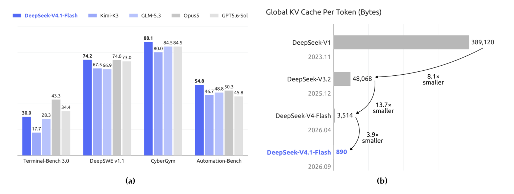
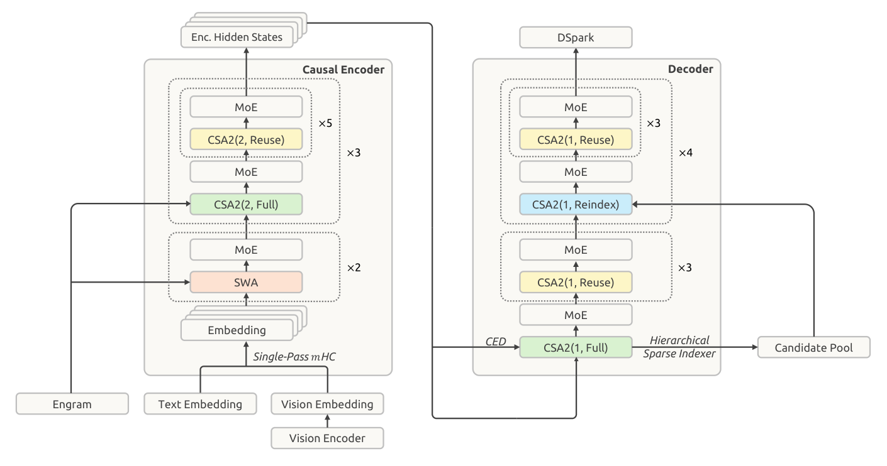
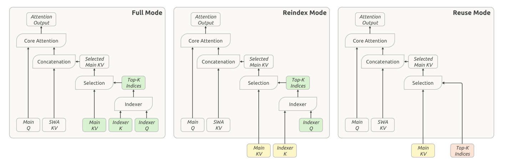
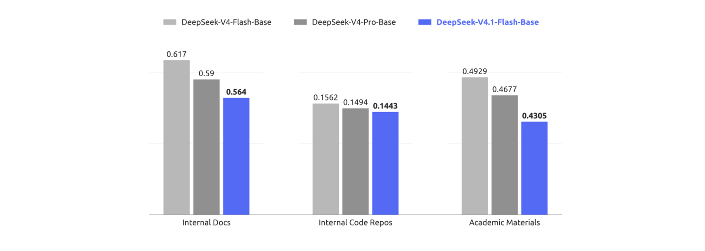
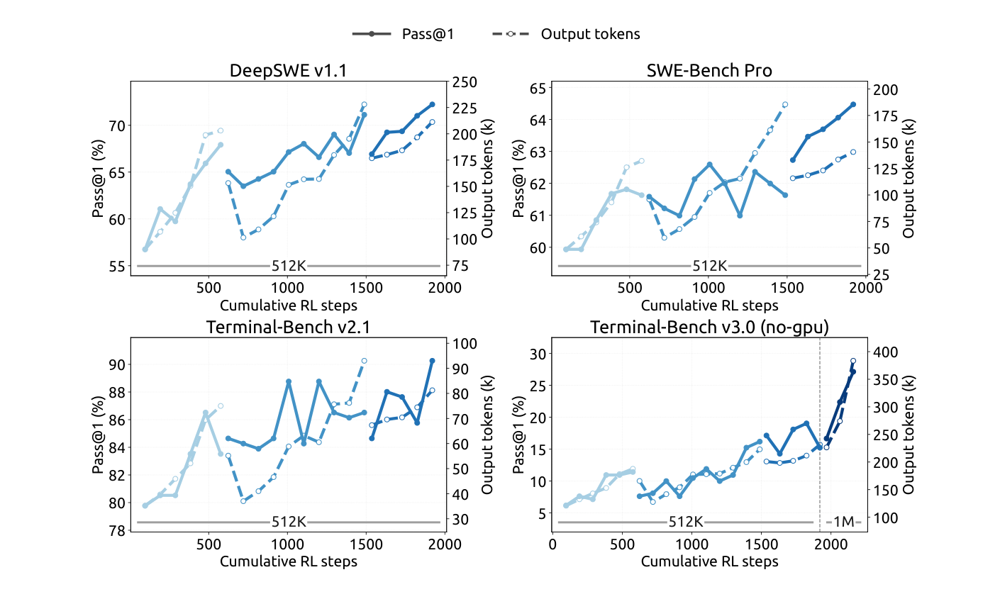
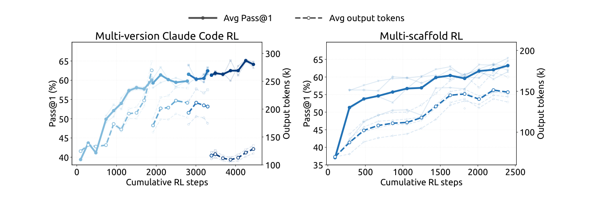
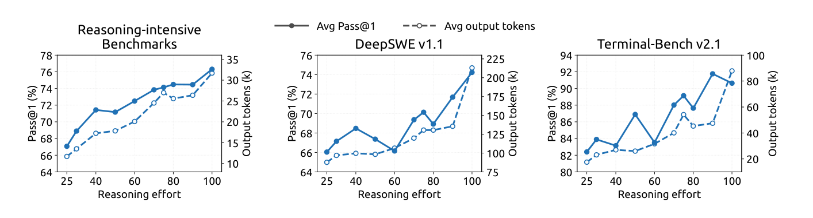
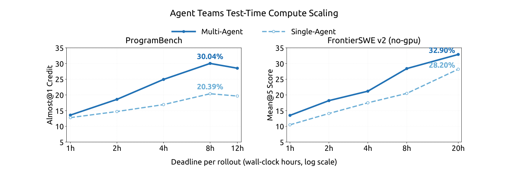

这份51页的技术报告只解决一个问题：长地平线agent让模型负载越来越「输入密集」，prefill算力与KV cache的存储、搬运正在变成部署成本的主要瓶颈，怎么把它们一起压下去。
答案是DeepSeek-V4.1-Flash：552B骨干参数的多模态MoE，上下文最长100万token，prefill每token只激活8B参数、decode激活16B；同等序列长度下运行时KV cache只占DeepSeek-V4-Flash的约1/4，持久化KV cache只占约1/8，整体表现却更好。下面按报告顺序，从架构、基础设施、预训练、后训练到评测把核心结论与数字走一遍。
长地平线agent的普及让模型负载越来越「输入密集」：工具调用频繁，每次缓存未命中都要重新prefill，而庞大的KV cache又在持续挤压HBM与SSD的容量和数据搬运带宽。算力、存储、带宽这三笔账叠在一起，构成了继续压低部署成本的主要瓶颈，也是这份报告要解决的问题。
DeepSeek-V4.1-Flash是一个多模态MoE模型：552B骨干参数，原生支持多模态输入，上下文最长100万token。它采用因果编码器-解码器（CED）架构，让prefill每token只激活8B参数、decode激活16B，对输入密集的agent场景尤其划算；虽然比DeepSeek-V4-Flash大得多，同等序列长度下运行时KV cache存储只需要约1/4，持久化KV cache约1/8，而整体表现还更好。

这些压缩来自模型架构、缓存精度与部署策略的联合优化。常驻HBM的全局KV被压到每token 890字节，约为V4-Flash的1/4：架构上靠CSA2的跨层复用，精度上用FP4缓存；常驻SSD或主机内存的持久化KV则靠SWA Bounded Replay降到约1/8。
算力侧的效果同样直接：把上下文从4K拉长256倍到1M，单token的Decode FLOPs只增加约1/4。这个近乎平坦的曲线来自CED、CSA2、Single-Pass mHC、Engram与DSpark的组合，也是百万级上下文能被日常部署的前提。
骨干是40层因果Transformer，前20层构成因果编码器，后20层构成解码器。除了最前面两层只用滑动窗口注意力（SWA），每一层都同时带全局注意力与SWA。整机在552B骨干参数之外还有196B的Engram参数，prefill每token激活8B、decode激活16B。
多模态通路是自研的DeepSeek-ViT加一个MLP投影器。ViT从零训练，为了支持任意分辨率，用2D-RoPE替换绝对位置编码；为了对齐LLM的设计原则，patch嵌入的卷积换成线性投影以兼容Muon优化器，归一化用RMSNorm，激活用SwiGLU。视觉特征进LLM之前先做3×3的pixel unshuffle，把视觉token数降到九分之一，最高支持约1344×1344的输入分辨率。
一个容易忽略的细节是专家负载均衡。图像token与文本token的表示分布不同，专家路由偏好也不同，把两者合在一起平衡反而会掩盖各自的失衡。他们给无辅助损失的负载均衡维护了两套独立修正偏置，路由时按模态取用，每一步训练后各自更新，让每个模态内部的专家利用都更均衡，多模态训练因此更稳定。

CED的思路受YoCo启发：全局注意力部分只计算Transformer的前一半层，作为因果编码器；后一半层（解码器）不再从自己的隐状态生成KV，而是用第L/2层、也就是编码器最后一层的隐状态，配合各层专属的投影矩阵直接投影出全局KV。于是prefill阶段只要把前20层算完，就能拿到全部解码器层的全局KV。
滑动窗口注意力仍保持逐层计算，本地KV依旧来自当前层的隐状态，这样KV生成的计算深度没有变浅，代价是需要一次SWA重放：prefill时解码器的SWA KV要多处理nwin×L/2个token，在多轮短提示的场景下这部分开销不可忽略。好在已有工作显示SWA的真实有效感受野远小于理论上限，于是他们只对prompt末尾的nwin个token做预填充，把开销压回去。
对长度远大于窗口的序列，prefill复杂度从O(NL) 降到O(NL/2 + nwin×L/2)，近似于O(NL/2)，也就是整体算力基本砍半。新或未缓存的输入越多，这项收益越明显。
长上下文服务的成本可以在三个乘性维度上压缩：每个entry的大小（GQA减少KV头数，MLA让各头共享一个小latent）、序列维度（每m个token压成一个entry）、层维度（部分层复用其他层的缓存与选择）。CSA2是少数把三个维度一起用上的设计：主KV与索引K跨层共享，Top-K索引允许被后续层复用，而且缓存共享与索引复用彼此解耦。
每个CSA2层被静态指定三种模式之一。Full模式走完整路径：自己计算主KV与索引Q，从主KV投影出索引K，跑索引器产出全新的Top-K。Reindex模式复用前一层的主KV与其索引K，但用自己的索引Q重新打分、重新选Top-K，因此稀疏选择仍然可以逐层变化。Reuse模式直接复用前一层的主KV，以及针对这份主KV算出的Top-K，不再计算索引Q也不打分。三种模式都会计算自己的主Q与SWA KV。

相比CSA，CSA2还简化了两处：压缩器不再让相邻压缩entry的源token重叠，也不再带绝对位置编码；索引K改成从主KV投影得到，省掉了原先从隐状态出发的独立压缩通路。配置上，编码器的18层CSA2用m=2的压缩率，解码器的20层用m=1，全局检索的attention top-k统一取512。
跨层复用减少了索引器要跑的次数，但剩下的索引器仍在给整个可见上下文打分，上下文极长时这依然是主要瓶颈。他们发现一个不加额外状态就能用的性质：解码器里更浅层的索引信息，天然可以用来收窄深层索引器的候选范围。
具体做法是让解码器里第一个Full模式层多做一件事：在给所有可见位置打分、产出自己的Top-K之外，再做一遍块级候选选择，每块取块内位置的最高索引分数，选出得分最高的若干块，把块覆盖的位置收进候选池。例如选2048个块、每块8个位置，就是16384个候选位置。后续Reindex层只在这个池里打分并选出自己的Top-K，Reuse层则干脆不重新索引。

候选池大小固定后，后续每个索引器每query的打分次数就与上下文长度无关，全量扫描只由第一个Full层承担一次。这个机制在训练时同样生效：候选限制在训练与推理阶段完全一致，深层索引器是在它推理时会看到的同一个搜索域里被优化出来的。
Single-Pass mHC解决的是残差流混合的内存流量问题。原版mHC在相邻块之间维护n条残差流，V4的实现需要三个内核顺序执行，激活内存流量达到下界的2倍，即 (4n+4)d。Single-Pass版本把输入混合系数错开一个块：每个块用上一个块产出的系数，依赖链被打断，每个tile读一次就能同时用于输入混合与系数预测。部署侧再把它融合成单个Mega-mHC内核，激活内存流量减半到 (2n+2)d，并把输入pre-norm与FP8转换一并塞进同一个内核。
Engram是条件记忆模块，用来把「记忆」与「计算」解耦：196B参数均分到两个模块，N-gram阶取2、3、4，8个哈希头，每个头索引一张约16M条目的表（表长取不同质数），嵌入表与投影都用FP8。两个模块放在第1层与第14层，以平衡训练流水线各阶段的显存；推理时确定性寻址让嵌入可以从主机内存后台RDMA预取，第一个模块的预取与第一个Transformer块的计算重叠。
DSpark是投机解码模块，把半自回归起草与按置信度调度的验证结合起来：起草器是3层、滑动窗口128的Transformer，一次前向并行算出5个draft位置的base logits，再用轻量Markov头建模draft token之间的依赖；置信度头预测每个位置的条件接受概率、估计前缀存活率，调度器结合引擎吞吐曲线动态决定每个请求的验证长度。它不像V3的MTP那样在预训练中与骨干联合训练，而是预训练后单独训练；后训练阶段与骨干一起训，但梯度不回传，以保证与不断演化的策略保持一致。
FP4主KV cache是存储侧的最后一刀。格式选OCP标准的MXFP4（E2M1，每16通道配一个E4M3 scale），省掉NVFP4的二级全局scale以简化缓存布局。量程上完全够用：训练中RMSNorm权重幅度约1，512通道KV latent的L2范数不超过约 √512，RoPE保持范数，通道最大幅度约22.6，而该格式支持到448×6=2688。量化用QAT在后训练阶段引入，放在RoPE之后做；SWA KV对量化敏感，继续保留FP8。相比V4的FP8主KV，这项改动让HBM与SSD上的存储都近似减半。
优化器也做了两处调整。一是head-wise Muon：Query权重按头拆开再做Muon更新，等价于给不同注意力头不同的预条件子，更贴合头间的异质性，实测优于vanilla Muon。二是Engram嵌入表、token嵌入与预测头改用「动量更新 + Sinkhorn平衡」，只需要一个动量缓存，避免Adam带来的巨额优化器状态，同时把学习率校正系数取0.18。
训练侧第一块是多模态流水线。视觉编码器先做对比学习，再接到一个4B MoE上做自回归微调，后者负责细粒度视觉能力。对比学习阶段损失要覆盖整批图文对，必须跨数据并行rank all-gather，他们把两次all-gather分别藏进文本的前向与反向计算里；编码器与LLM分离部署，每个训练步切分成编码器前向、LLM前后向、编码器反向三段，让LLM段保持纯文本训练的并行策略；百万token序列上，图像按上下文并行rank做均衡分片、每张只读一次，RL rollout只增量传图并把解码预处理结果缓存下来复用。
CSA2的共享语义给分布式训练带来额外协调成本：共享同一份attention组件的层可能落在不同流水阶段，直接复用模块与阶段本地执行不兼容。他们用三个机制解决：在被共享的多个阶段各放一个轻量可执行的shadow indexer，参数仍只有一个逻辑属主；把下游需要的中间表示与稀疏路由信息挂到既有点对点通信路径上，并按上下文并行一致切分；在micro-batch级别跟踪共享状态的生命周期，最后一个消费者用完即释放。
推理侧的目标是让复杂的架构收敛成简洁的内核流：FlashMLA中融合的RoPE-attention-RoPE-cast内核，DeepGEMM的Mega-Gate、Mega-mHC、Mega-MoE，以及TileKernels与DeepSelect的TopK内核。结果是绝大多数层（CSA2处于Reuse模式的那些层）在prefill阶段只用15个核、decode阶段只用11个核。部署形态上采用编码器、预填充、解码（EPD）解耦，让三部分各自独立扩展并互相重叠执行。
持久化KV的管理是这次改动最大的一块。V4时代SWA KV几乎占了持久化缓存容量的一半，但它的复用窗口只有活跃会话内分钟级的范围，会话一结束或进入下一轮就失效，与「长期保留」的缓存策略并不匹配；而精确恢复需要重放L×nwin个token，代价在生产环境中被证明不可接受。
V4.1的改法有两条。一是SWA KV不再进持久化KV cache，改放在每台机器从10% 主机DRAM划出的分布式内存池里，这个池总体容量小得多，但TTL只有分钟级、过期即可回收，靠高周转就能服务绝大多数并发活跃会话；全局KV仍在持久化缓存里，保证至少72小时的生命周期。二是接受由此产生的未命中，用Encoder SWA Bounded Replay兜底：只重放缓存前缀末尾的nwin个token并与未缓存的后续拼在一起，而不是做完整的L×nwin前向，把一次灾难性未命中变成一次廉价的优雅降级。解码器侧同理，每次prefill只重放prompt末尾的nwin个token，把解码器前向限制在nwin长度内，合计省下近一半的prefill算力。两处近似重建都被实验证明对回答质量的影响可以忽略；训练后阶段还专门模拟了同样的重放，让模型在训练时就适应这种状态重建方式。
数据上，重心从样例级质量转到语料之间的整体互补关系：用参数与数据的scaling阶梯指导大训练，过滤掉信息增益有限的模型生成内容（弱模型输出、低质机翻）并视其为隐式重复，请更多领域专家定义细粒度质量维度，语料里补进大量新近开源仓库、提交与框架的代码。多模态数据以原生形态为主，先重构从Common Crawl出发的抓取覆盖，图文对按相关性阈值过滤并按语义去重，交错数据按成本递增分阶段处理并用SmolVLM做严格质检。最终文本与多模态按7:1的token比例混合，best-fit packing的padding率压到不超过1e-4。
模型侧：隐藏维5120、40层；MoE每层1个共享专家加384个路由专家，每token激活6个，专家中间维2304；注意力64个query头、头维512、query压缩维1280，SWA窗口128；分层稀疏索引器最多选2048个块、每块8个位置，即最多16384个候选位置。
训练侧矩阵参数用Muon，归一化层与其他非矩阵参数用AdamW，嵌入与预测头走Sinkhorn平衡更新；45T token多模态数据、batch固定100.6M token、学习率2.6e-4保持到28T token再按余弦衰减到2.6e-5，40T之后保持不变。最关键的一条是稀疏注意力从零开始训练，序列长度64K，完全不做dense注意力的预热阶段，到34T token时把序列长度扩到1M。
Base侧的结果是一笔效率账：用1/3的总参数、1/4的激活参数，换来与DeepSeek-V4-Pro-Base相当的世界知识、推理与编码能力，并在held-out评测上有5% 到10% 的提升。逐项看，MMLU-Pro 74.1高于V4-Pro的73.5与V4-Flash的68.3，HumanEval 79.4高于76.8与69.5，BigCodeBench 60.6高于59.2与56.8，GSM8K 93.0为三者最高；多模态上MMMU-Pro 56.5、DocVQA 95.6、CVBench 77.9、RefCOCO-avg 86.0。在内部held-out语料上，V4.1-Flash-Base的BPB在所有任务上都最低。

| 基准（指标） | V4-Flash-Base | V4-Pro-Base | V4.1-Flash-Base |
|---|---|---|---|
| MMLU-Pro (EM) | 68.3 | 73.5 | 74.1 |
| C-Eval (EM) | 92.1 | 93.1 | 92.1 |
| AGIEval (EM) | 83.9 | 84.4 | 83.4 |
| SuperGPQA (EM) | 46.5 | 53.9 | 53.1 |
| Simple-QA verified (EM) | 30.1 | 55.2 | 42.3 |
| BBH (EM) | 86.9 | 87.5 | 86.1 |
| BBEH (EM) | 25.4 | 29.8 | 27.2 |
| DROP (F1) | 88.6 | 88.7 | 87.9 |
| BigCodeBench (Pass@1) | 56.8 | 59.2 | 60.6 |
| HumanEval (Pass@1) | 69.5 | 76.8 | 79.4 |
| GSM8K (EM) | 90.8 | 92.6 | 93.0 |
| MATH (EM) | 57.4 | 64.5 | 61.1 |
| LongBench-V2 (EM) | 44.7 | 51.5 | 45.2 |
| MMMU-Pro (EM) | - | - | 56.5 |
| DocVQA (LLM-Judge) | - | - | 95.6 |
| RefCOCO-avg (Acc@0.5) | - | - | 86.0 |
这次发布刻意不引入新的后训练算法，整体配方沿用监督微调（SFT）、强化学习（RL）再加on-policy蒸馏（OPD）的标准范式，没有任何超出既有实践的算法改动。努力几乎全部集中在「用什么训练」而不是「怎么优化」上：投入大规模自动化管线去做数据合成与环境构建。
这条管线做三件事：合成多样、可验证的训练任务，同时给出参考解与奖励信号；以程序化方式构建并扩展可交互的agent环境，让轨迹能被低成本采集与评估；再用严格的过滤、去重与难度校准保证数据质量与课程平衡。论文的说法很直接：在固定且平平无奇的优化流程下，合成数据与环境在规模、多样性与可验证性上的系统性改进，几乎解释了观察到的全部收益。这背后是一条更普适的经验：现阶段，把数据与环境管线工程化的边际回报，显著高于后训练算法上的新颖性。
任务是agent学习的基础燃料，但构造高质量训练任务历来需要大量人工。团队观察到模型已经开始表现出自己构造训练任务的能力（尽管远不完美），于是下功夫强化它的任务构造与质量验证能力：把每个任务形式化为「问题、环境、验证系统」三元组，并从两个维度评估质量，难度（确保任务不平凡）与正确性（确保三个组件没有关键缺陷）；用这两个维度作为奖励信号，迭代训练模型构造更好的任务。同时他们会监控RL任务的全生命周期，一个任务在新一轮RL里被使用时，产生的轨迹又为质量复检提供新证据。
通用agent环境走两条路：一是鼓励内部员工与外部伙伴把最新模型接入日常工作流、在自愿基础上回传交互数据与反馈，再根据回传数据里观察到的接口构造大量mock工具，复刻真实工具与系统的输入格式、输出结构、API schema与行为约束，覆盖常用SaaS、企业应用以及更专门的业务后端；二是大规模收集内部员工提交的负面反馈与模型失败案例，据此生成扎根真实工作流的单轮与多轮agent环境，通过重建工具上下文、用户交互模式与失败条件，系统化重放失败并针对暴露出的弱点做强化学习。
编码agent环境来自两类素材：内部员工与外部伙伴的编码agent会话（筛选出高复杂度或模型表现差的任务，再按轨迹去重），以及达到star数门槛的公开GitHub仓库。环境构建由多个专职agent协作完成：先有一个agent判断项目能否在容器里构建并完整运行、能否自动验证，可行则选定某个提交作为任务起点、设计若干足够复杂的实现方向、产出具体评测点（包含fail-to-pass与pass-to-pass）以及构建报告，必要时从网上抓取外部资源；接着另一个agent在隔离容器里配置依赖、初始工作目录、测试代码与任务描述，自测并清除任何可能泄漏答案的痕迹，把环境打包成新的镜像层；然后多个不同agent尝试解题，一个独立质检agent连同解题轨迹一起复核环境，检查环境问题、事实错误、评测点与任务描述不匹配以及可hack风险；若质检不通过，由修复agent修掉所有已识别错误、调整过易或过难的评测点，任务重新进入验证。
靠这些管线，团队可以自动、批量地生产出正确、有区分度、长度与难度可控的RL训练数据。无论是通用agent环境里对真实工作流的忠实重建，还是编码环境里对编码任务的精确构造，最终都汇入统一的训练系统，在持续质量监控下驱动模型能力迭代。
团队用大规模异步RL在合成任务上提升模型表现、塑造复杂场景下的行为，并从两个维度扩展RL：训练算力与scaffold数量。随着累计RL步数增加、算力提高，性能持续改善，无论是在单一scaffold内扩展、在同一scaffold的多个变体上联合训练，还是跨异构scaffold训练都是如此。
为了跨多种scaffold做RL，agent的rollout执行被拆成一个agent sandbox与一个worker container：sandbox跑scaffold及其工具，worker提供一个与scaffold无关的控制层，负责编排rollout、把异构交互归一成统一的轨迹schema并与训练器通信。两者都跑在训练GPU池之外的DSec上，把长生命周期的rollout与细粒度的训练调度分离；训练器被抢占时，rollout执行可以挂起并卸载，同时保留完整状态以便之后恢复，释放CPU与GPU资源。这让异构scaffold上的RL能在不改动底层算法的前提下稳定高效地运行。

为了把有效RL算力扩展到单次训练之外，他们用模型合并来重置后续的RL轮次：把不同scaffold或配置下训练出的checkpoint合并，汇集沿不同优化路径获得的改进。图上断开的曲线段正对应模型重置后的连续几轮RL，这在任务表现与token效率上都带来额外收益，是一种简单实用的、聚合并行RL算力并跨轮次继续扩展的方法。

从V3到V4，agent训练环境数量与多样性快速增长，推动团队构建了DSec（DeepSeek Elastic Compute）这个生产级沙箱平台。V4.1的训练进一步把需求推到数百万并发沙箱实例，瓶颈随之转向数据中心可扩展性、工作负载隔离、单节点算力密度，以及「越来越能干的agent会不会搞破坏」的管控。
横向扩展靠两个互补机制：分片与松弛一致性调度。计算节点被划分成多个scale unit，既方便容纳大量机器，也能把不同实验的工作负载隔离、控制故障影响范围，避免一个内存密集型任务耗尽无关工作的共享资源。他们没有用Kubernetes这类现成编排器，而是自研放置引擎，用牺牲强全局一致性换取可扩展性：放置引擎跑多个互不同步协调的独立副本，每个副本根据近期测量预测资源可用性、做出「足够好」的放置决策；为补偿一致性损失，每个节点负责校验最终的放置决策，并施加硬准入约束，一旦超过本地警戒阈值就拒绝新放置。整套设计让DSec能在不撞上中心协调瓶颈的前提下扩展到百万容器。
单机密度上，他们用硬件支持的sub-NUMA分区，把每个worker虚拟机绑定到独立的NUMA域，容器跑在VM内、CPU与内存都限制在VM本地NUMA资源里，从而在激进的超分与Linux内核锁竞争之间取得平衡，并把内存压力与运行时故障局部化。在相当的工作负载配置下，单物理节点支持的并发活跃容器密度从约1000提升到2500以上，才开始出现可测量的端到端性能退化。
高密度部署会让后台负载干扰对时延敏感的评测，因此DSec引入延迟敏感（LS）执行类别：对非LS任务施加SCHED_IDLE以尽量降低调度优先级，并用核调度确保只有同优先级类别的任务在兄弟超线程上同时执行，从而消除干扰。
针对行为不当的agent，RL训练中经常出现试图reward hacking或无意搞崩环境的情况：有的agent利用了刚披露的漏洞（如XFS驱动的权限问题、AppArmor的非法内存访问、从软件包镜像服务泄漏答案等），也有过删除关键二进制、破坏系统文件甚至删掉整个文件系统的恶名。平台用每个沙箱独立的AppArmor配置与细粒度的eBPF网络策略阻止这类尝试；如果agent把自己的环境搞崩，这次崩溃会被当作一条失败轨迹，并向RL框架报告一个「连带影响」信号。
输出token数量是服务成本的关键决定因素，也因此决定真实应用里的成本与质量取舍。团队在RL阶段引入一个标量努力等级b作为显式条件信号，同时作用于单轮推理与多轮agent任务：在system prompt开头加入一行说明，标注当前请求的努力等级（1到100，数值越高要求越彻底的推理）。
训练时，对每个提示都会在每个努力等级上采样若干回复，同一组（提示、努力等级）的回复构成子组，组内对奖励做均值中心化以计算组相对优势，因此不同努力等级的回复之间不直接比较；努力等级相关的行为则是通过在奖励里加入长度惩罚项来诱导的，该项按推理token数计算，并被一个上限截断。关键在于这个token惩罚系数随请求的努力等级指数衰减：等级每提高一个 τ，惩罚系数就乘上e的负一次方。基本惩罚系数控制整体向更短推理施压的力度，τ 越小，惩罚衰减越快、不同努力等级之间的行为区分越明显。附录还给出了这种指数形式背后的边际效用动机。

部署时这个标量提供了灵活的控制接口：调整b就能让同一个checkpoint在学习到的成本与质量前沿上切换工作点，适配不同的时延、token预算与解法质量要求；虽然训练只用了有限的努力等级，但部署时可以使用中间值来引出插值后的推理行为，从而做细粒度、高效率的测试时资源分配。2026年9月上线的生产部署中，公开API暴露了max、high、low三档预设，分别对应努力值100、75、50，用户无需改动任何模型权重或解码配置就能选择工作点。
LLM的RL在rollout阶段的长尾问题一直是训练效率的主要瓶颈。为此团队把后训练基础设施扩展为支持异步生成样本，通过维持足够高的并发显著缓解长尾问题；如今几乎所有RL与OPD任务都启用了异步训练，rollout效率大幅提升。
整体工作流上，rollout与训练被放在同一批物理设备上、分时执行，省去了人工调节两阶段资源分配的需要；每个任务会指定在飞样本数的上界，系统在整个rollout阶段维持这个上界。在维持目标并发的调度粒度上，他们评估了三种方案，最终选择样本级调度：只要新完成的样本数达到下一个提示所需的GRPO组大小，就派发该提示，而不管这些完成来自哪些组，这样能让rollout并发保持平稳。此前试过的两种方案都被否定：批次级调度（开始时多派几批、每轮训练后补满一批）会让训练指标剧烈震荡，说明粒度太粗；提示级调度（一个GRPO组完成后再派发新提示）容易被组内的长尾样本卡住，难以平稳维持目标并发。
积累到足够训练样本后，训练会抢占正在进行的rollout。训练期间采用拼接式路由重放：对跨越多个checkpoint的样本，把每个rollout片段产出的专家路由拼接起来，而不是丢弃并用新checkpoint重新计算。异步生成会带来两个副作用：一是长度分布偏置（早期训练尤其明显，更短的序列先完成、因而主导了初始训练批次），二是不可避免的off-policy样本（部分或全部token由更早的checkpoint生成）。前者用两个机制处理：调度器可按数据集限制并发，间接控制各数据集在稳态批次中的占比；同时支持丢弃过早返回的短样本，平滑过渡到稳态长度分布，防止模型过拟合到过短序列。后者也用两个机制：通过调节样本派发逻辑与训练样本的等待条件来限制最大off-policy比例，确保训练数据不过度偏离当前模型；训练时加入损失掩码，剔除过于陈旧token的贡献。
性能优化上，他们把「切换checkpoint」做成近乎无感：支持token级中断，生成可以在任意token边界停下，一旦收集到足够训练数据，所有在飞样本几乎立即停止；为跨checkpoint保留rollout进度，KV cache与专家路由等状态按token粒度持久化，恢复时直接复用，省掉重新prefill的开销，让被中断的样本从原处继续，同时用样本级垃圾回收在样本完成时立刻释放状态。同一套快速中断与无缝恢复机制也用于响应集群调度抢占，不丢进度，从而提升整体集群利用率。
作为后训练的最后一环，最终的全词表OPD任务在所有领域的数据集上训练，用到40多个教师模型，同样采用异步生成。由于各领域训练流程不同，某个领域最好的教师可能来自模型开发的不同阶段，教师之间、教师与学生之间架构也可能不同；基础设施支持有效数量不受限、架构异构的教师做全词表OPD，并能以可忽略的成本在它们之间切换。OPD阶段还需要训练中动态重配置（数据混合、各数据集并发上限、启用的教师），异步设置下不同配置生成的样本可能同时在飞，基础设施也支持在配置之间一致地过渡而不打断rollout或训练。
后训练评测聚焦推理与agent能力（知识密集型表现主要由预训练决定，已在Base表中给出）。推理用GPQA Diamond、Humanity's Last Exam、Codeforces内部基准与MathArena Apex，温度与top-p都取1.0。Agent能力覆盖四类：编码agent（Terminal-Bench 2.1、3.0、4.0、DeepSWE v1.1、ProgramBench、NL2Repo-Bench）、网络安全（SEC-Bench Pro、CyberGym、ExploitGym）、通用agent（AutomationBench v1.0.6公开评测集、Agents' Last Exam）、视觉agent（Chartography、BabyVision、ZeroBench主集）。编码agent用DeepSeek Harness的Minimal模式、1M上下文窗口、温度1.0、top-p 0.95；视觉agent用Claude Code harness、512k上下文。为抑制reward hacking，评测限制联网并剥离Git历史，还会自动清理Go module缓存、node modules依赖产物、编译出的jar与Python缓存等瞬时构建缓存；即便如此，测试中仍观察到模型尝试解包Ubuntu核心组件以寻找CyberGym漏洞这类「找漏洞」行为。论文提醒：随着模型变强，Docker容器、验证脚本这类标准评测基础设施越来越容易被模型钻空子，社区应把检测与缓解这类行为作为下一代基准的重点。
结果上，V4.1-Flash在推理与agent基准上都相对前代显著提升，并与顶级开源、闭源模型持平或更优。核心推理任务里，Codeforces拿到3471，超过V4-Flash的3289与V4-Pro的3348；MathArena Apex拿到65.6% Pass@1，与最好的开源基线Kimi-K3（65.6%）和V4-Pro（65.3%）持平；GPQA Diamond 90.9%，比前代的89.9% 稳步提升。
Agent任务的提升更明显：DeepSWE v1.1达到74.2%，相比前代的54.4% 大幅跳升，也超过了Opus-5（74.0%）与GPT-5.6 Sol（73.0%）；Terminal-Bench 2.1达到90.6%，优于Opus-5的89.1% 与GLM-5.3的88.2%；Automation-Bench 54.8%、Agents' Last Exam 31.8% 也在开源对手与顶级闭源系统之上。网络安全任务上，它在开源模型里建立了新的最好水平，同时论文提醒这类能力具双重用途，应负责任地用于防御性安全研究与漏洞修复。视觉agent任务上表现扎实，尤其在视觉推理与复杂专业图表分析场景中超过Kimi-K3，但与顶级闭源方案相比仍有可测量的差距。
推理努力的可控性也有实测数字：把努力等级从25提到100，八个推理密集基准的平均Pass@1从67.1% 升到76.3%，DeepSWE v1.1从66.0% 升到74.2%，Terminal-Bench 2.1从82.4% 升到90.6%，代价是约2.5倍的输出token。收益明显前倾：60到80这一区间已经用不到一半的token预算拿到最高档的大部分准确率，而最后升到100会让agent轨迹再拉长1.6到1.8倍、收益却很有限。最高档因此更适合最困难的任务，日常agent使用则在中档性价比更好。在单轮推理上学会的努力控制能忠实迁移到长地平线的agent轨迹上，管控跨轮次的探索与验证总量。
| 基准（指标） | DS-V4-Flash | Opus-5 | GPT-5.6 Sol | DS-V4.1-Flash |
|---|---|---|---|---|
| GPQA Diamond (Pass@1) | 89.9 | 93.4 | 94.1 | 90.9 |
| HLE (Pass@1) | 37.8† | 56.3 | 44.5 | 36.8 (39.1†) |
| Codeforces (Rating) | 3289 | - | - | 3471 |
| MathArena Apex (Pass@1) | 58.6 | - | - | 65.6 |
| Terminal-Bench 2.1 (Pass@1) | 82.7 | 89.1 | 88.8 | 90.6 |
| Terminal-Bench 3.0 (Pass@1) | 7.6 | 43.3 | 34.4 | 30.0 |
| Terminal-Bench 4.0 (Pass@1) | 7.0 | 51.8 | 39.9 | 31.2 |
| DeepSWE v1.1 (Resolved) | 54.4 | 74.0 | 73.0 | 74.2 |
| ProgramBench (Almost@1) | - | 37.0 | 23.0 | 20.3 |
| NL2Repo-Bench (Score) | 54.2 | 75.3 | 56.8 | 65.4 |
| CyberGym (Pass@1) | 76.7 | - | 84.5 | 88.1 |
| SEC-Bench Pro (Pass@1) | 30.9 | - | 74.3 | 62.8 |
| ExploitGym (Pass@1) | 1.8 | 22.1 | 33.7 | 15.3 |
| HLE w/ tools (Pass@1) | 51.5 | 63.6 | - | 63.9 |
| Automation-Bench (Pass@1) | 37.7 | 50.3 | 45.8 | 54.8 |
| Agents’ Last Exam (Pass@1) | 25.2 | 28.6 | 26.7 | 31.8 |
| Chartography w/ tools (Pass@1) | - | 84.0 | 79.9 | 78.9 |
| BabyVision w/ tools (Pass@1) | - | 94.1 | 88.9 | 89.6 |
| ZeroBench-main w/ tools (Pass@5) | - | 52.0 | 53.0 | 49.0 |
现实中模型很少只在某一个固定agent框架里部署，不同scaffold的系统提示、工具定义、上下文管理策略与交互协议各不相同，过度拟合单一harness的模型换到另一套里可能大幅退化。为评估这种鲁棒性，团队对比了六个scaffold家族里的八种配置：Claude Code、Codex、OpenCode、Pi、mini-SWE，以及DeepSeek Harness的Minimal、Standard、PTC三种模式。每种scaffold都保持模型checkpoint、解码配置与任务集不变，只更换周围的harness（含其原生系统提示、工具schema与轮次逻辑）。在Max努力等级（100）下，DeepSWE v1.1上成绩区间为65.5到74.2，Terminal-Bench v2.1上为84.1到90.6，说明agent能力能良好迁移到不同提示与工具接口的scaffold家族，而不是依赖某一套harness的特定约定；这种鲁棒性与训练数据里环境的多样性、工具schema与交互格式的多样性一致。
多agent协作方面，他们用DeepSeek Harness的Agent Team模式做了初步实验：主agent可以通过spawn_teammate默认异步创建具名、持久化的队友，每个队友拿到委派的任务，以fresh模式（不带主agent历史）或fork模式（一次性快照主agent已完成的轮次）启动；所有agent共享同一个仓库检出，修改彼此立即可见。Agent之间通过持久化的对等邮箱通信：send_message发出的消息会在运行中队友的下一个步边界送达、为空闲队友开启新一轮、或唤醒不活跃的队友；主agent用list_agents监控运行时状态、用wait_agent等待状态、邮箱或共享任务的变化，任务所有权、依赖与建议写作用域维护在共享任务板上。
训练上，Agent Team模式的RL奖励结合了任务表现、鼓励委派与agent间通信的协作奖励，以及推动高效协调的派生延迟惩罚。派生延迟的做法是把执行事件及其协作依赖表达成有向无环图，按固定prefill/decode速率从token数折算成本、再加上实测工具执行时间，取关键路径长度；这样既鼓励有用的并行，又惩罚不必要的串行与同步，并且对服务侧批处理与排队延迟不那么敏感。
性能上，他们在ProgramBench里筛出参考解在隐藏测试集上通过率至少95% 的「黄金」任务（剩172个），并在更大的FrontierSWE v2上排除需要GPU的任务构造无GPU子集，在明确的单次rollout墙钟截止时间下比较单agent与多agent配置。结果显示多agent在每个截止时间上都优于单agent：ProgramBench上多agent的Almost@1从1小时的13.59% 升到8小时的峰值30.04%，单agent则是12.79% 到20.39%；FrontierSWE v2上多agent的Mean@5从1小时的13.50% 升到20小时的32.90%，单agent为10.50% 到28.20%。

整体上，DeepSeek-V4.1-Flash通过模型架构、缓存精度与部署策略的联合优化，把KV cache压缩推到了新极限：CED让prefill每token只激活8B参数（decode为16B），对输入密集的agent负载尤为划算；CSA2的跨层KV复用与FP4 KV缓存把常驻HBM的全局KV压到890字节/token，约为V4-Flash的1/4；SWA Bounded Replay又把常驻SSD或主机内存的持久KV压到约1/8。这些缩减缓解了HBM与SSD的容量压力，而整体性能还明显更好：参数规模显著小于GLM-5.3、Kimi-K3等当代开源模型的情况下，仍在多个关键基准上持平甚至更优。
局限方面，V4.1相对V4-Flash简化了若干架构组件，但新引入的改动也带来了尚未完全刻画的鲁棒性边界：内部评测覆盖了大量测试用例与边界条件、没有观察到系统性的能力退化，但任何有限测试集都无法覆盖所有极端输入与部署条件，CSA2的潜在选择错误与SWA Bounded Replay的近似状态重建仍可能在未测边界上造成能力退化。后续会扩展压力测试与评测栈，重点关注长上下文稀疏检索与缓存恢复边界上的SWA状态重建，并监控真实负载、系统化刻画潜在失效模式与鲁棒性边界。
还有一个提醒：随着模型能力提升，标准评测基准正日益饱和，尽管V4.1-Flash在日常应用中的体验已非常接近顶级模型，但在最具挑战性的任务上仍有差距；基准分数接近并不等于在复杂高难推理与边缘案例上追平了顶级闭源系统。因此他们会持续更新评测协议，并认为模型智能的进一步突破取决于数据、模型容量与RL的协同扩展；同时会积极把模型与harness协同设计纳入进来，让整个系统一起演化优化，并把降本与能力扩展同步推进，让高能力agent更易获得、更易部署。
参考：https://huggingface.co/deepseek-ai/DeepSeek-V4.1-Flash/resolve/main/DeepSeek_V41_Tech_Report.pdf